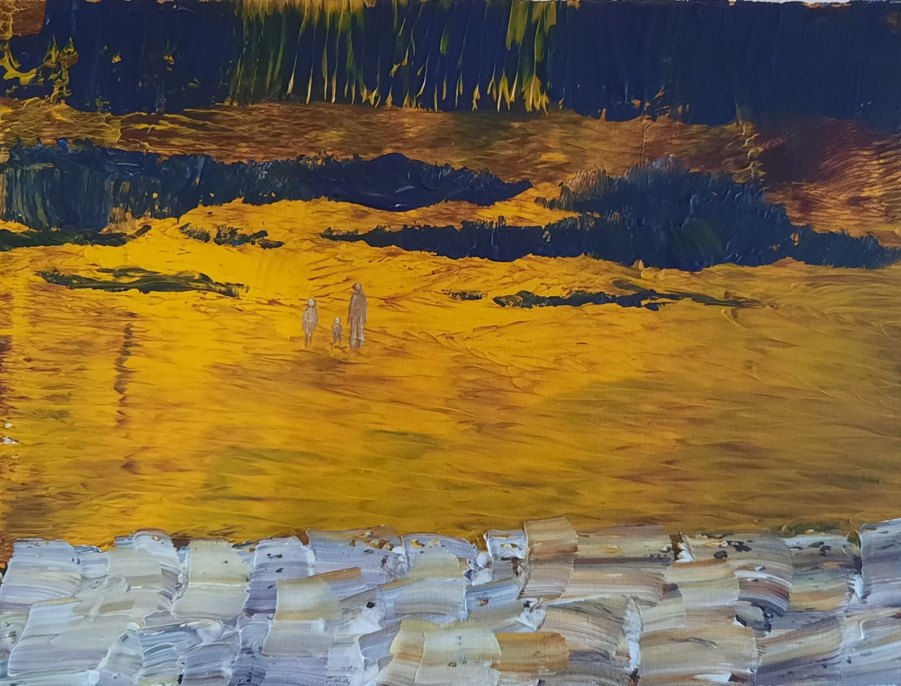
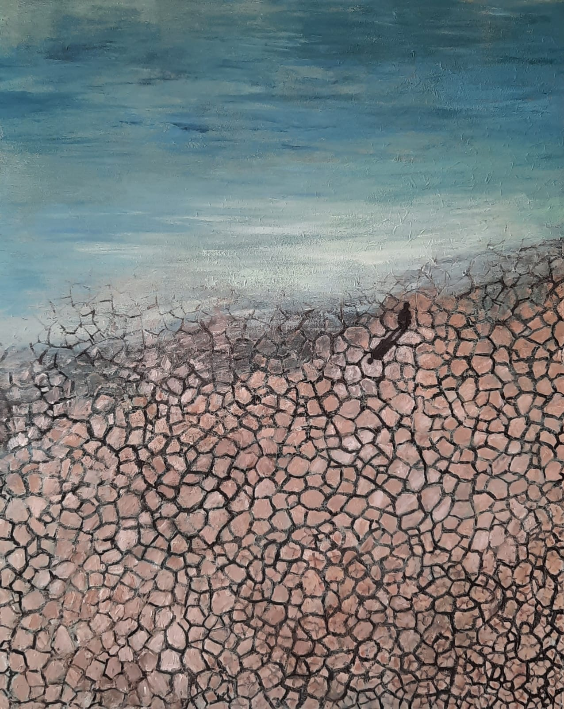
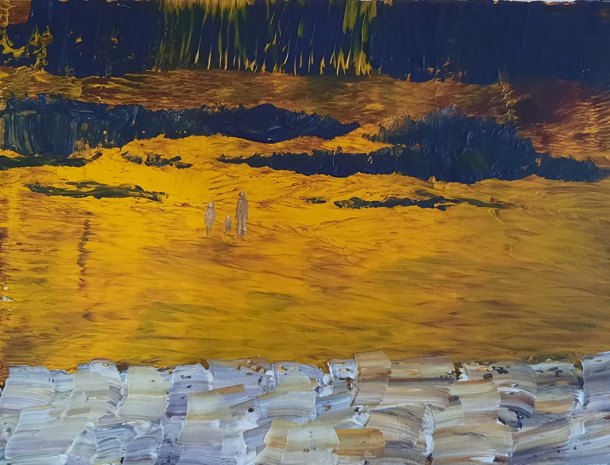
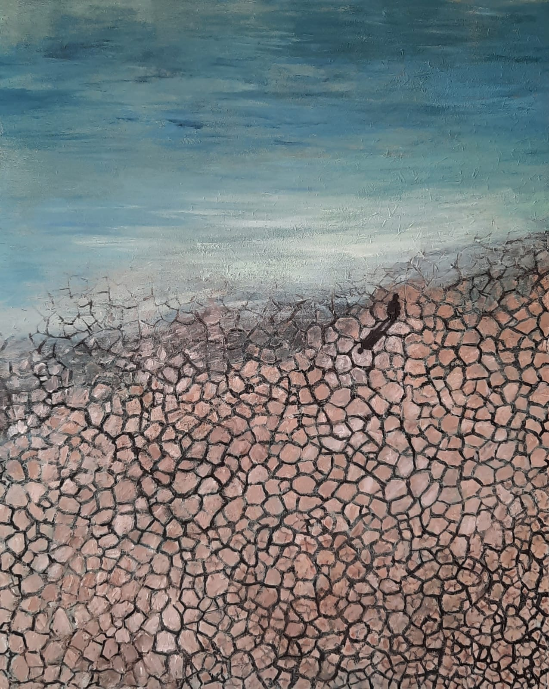
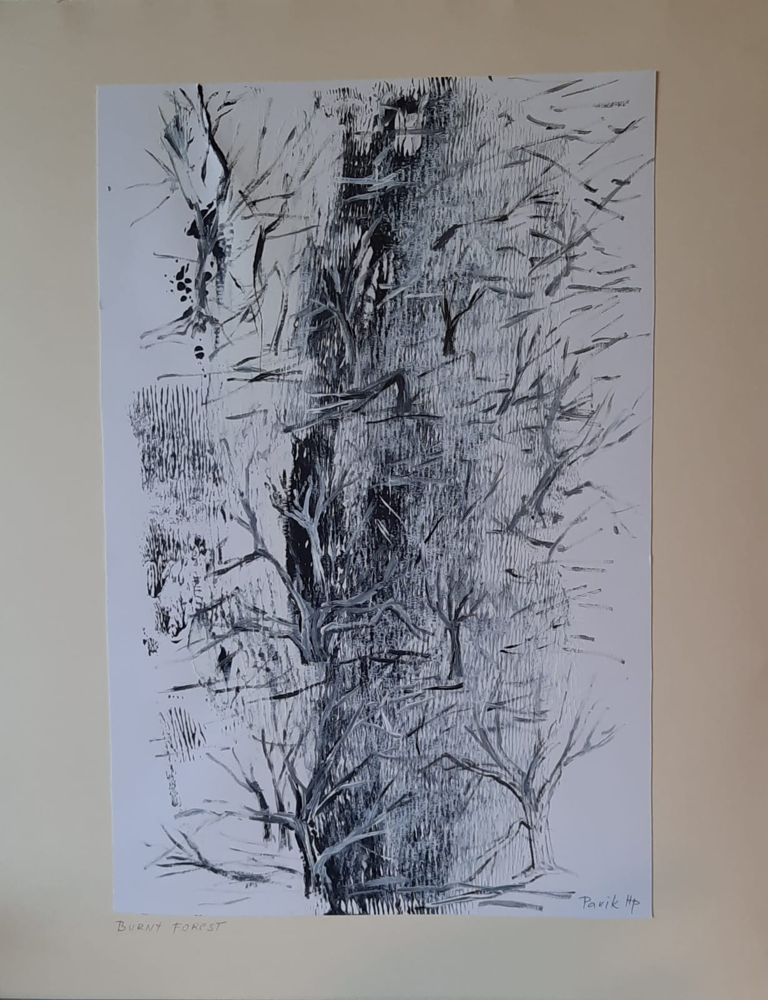
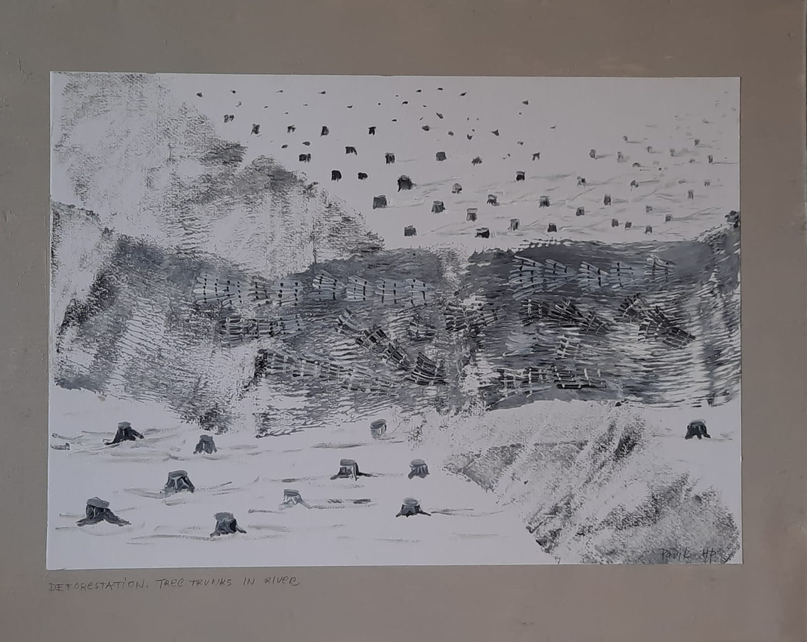
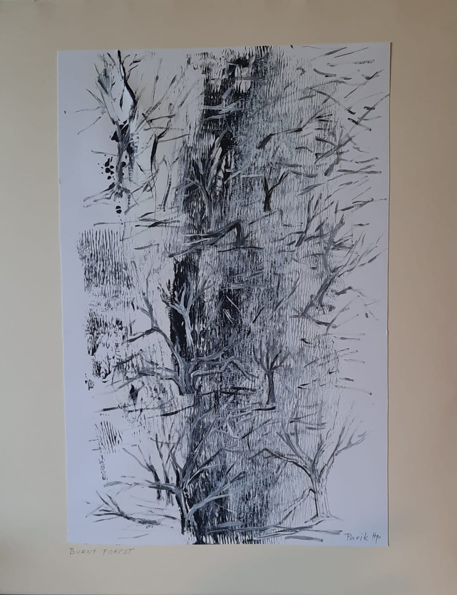
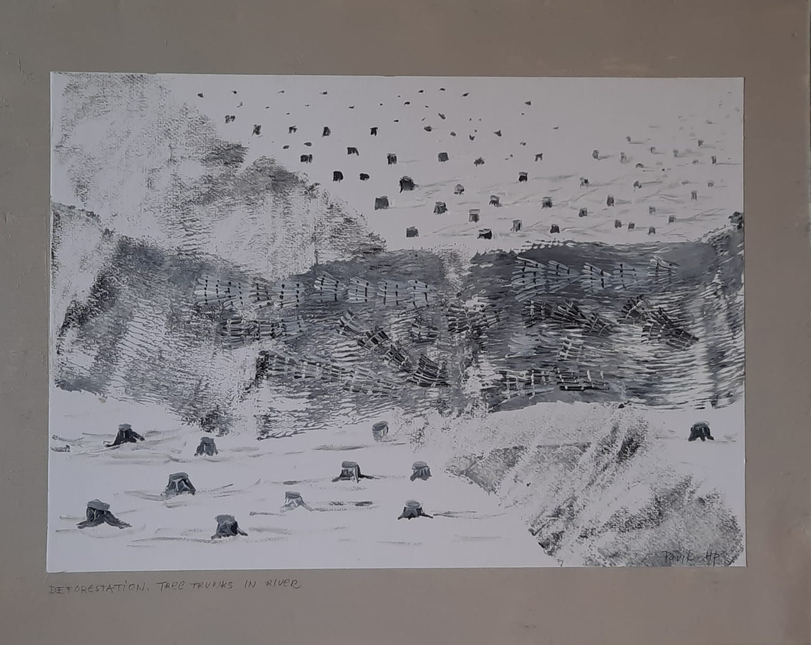

"Deforestation"
This interestingly aesthetic - looking abstract triptych painting actually depicts a harsh reality of deforestation of Amazon rainforest which usually follows a fairly predictable pattern.
The first clearings that appear in the forest are in a fishbone pattern. Over time, fishbones collapse into a mixture of forest remnants, clear areas and settlements.
I was inspired by satellite time series images where intact forest is deep green, while cleared areas are much lighter.
Unfortunately illegal and legal cutting is taking place in many parts of the world and causes irreparable damage to the ecosystem.
Acrylic on paper
90cm x 70cm
"On the edge"
Dried up lakes and rivers - a new phenomenon that will haunt us. There are lakes that have literally disappeared over past decades.
The Aral Sea - formerly the fourth largest lake in the world with an area of 68000km2. It had declined to 10% of its original size after the rivers that fed it were diverted by irrigation projects.
Acrylic on canvas
100cm x 70cm
"In troubles - plants, animals and us"
When animals or plants suffer, the entire ecosystem also suffers. We suffer too.
Acrylic on paper
100cm x 70cm
"Old man and olive tree"
Old wrinkled hands with deformed joints remind me of a bark of a century-old olive trees.
A parallel expressing our millennial symbiosis with trees.
Pencil on paper
60cm x 80cm
"Lost in desert"
Wandering through dry landscape. Without water, without plants.
Blinding light and exhausting heat slowly takes its toll.
Acrylic on canvas
30cm x 40cm
"Burnt forest"
As a child growing up in Central Europe, I never saw a forest on fire. Everything was green, dwet, beautiful. But the situation changed rapidly. Every year more and more forests are burning in the world. Also European forests suffering from huge fires.
It is devastating to see black, smoldering burns instead of strong, beautiful, sometimes hundred year old trees.
Acrylic on paper
30cm x 40cm
"It was a forest…"
Illegal logging leaves behind a desolate dead landscape. Giant trunks of cut trees that float in large bundles down rivers to processing sites evokes images of the apocalypse in me.
Acrylic on paper
40cm x 30cm
 





 


